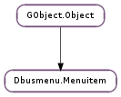

| Subclasses: | Dbusmenu.MenuitemProxy |
|---|
| static | new() |
| static | new_with_id(id) |
| child_add_position(child, position) | |
| child_append(child) | |
| child_delete(child) | |
| child_find(id) | |
| child_prepend(child) | |
| child_reorder(child, position) | |
| find_id(id) | |
| foreach(func, data) | |
| get_children() | |
| get_id() | |
| get_parent() | |
| get_position(parent) | |
| get_position_realized(parent) | |
| get_root() | |
| handle_event(name, variant, timestamp) | |
| properties_list() | |
| property_exist(property) | |
| property_get(property) | |
| property_get_bool(property) | |
| property_get_byte_array(property) | |
| property_get_int(property) | |
| property_get_variant(property) | |
| property_remove(property) | |
| property_set(property, value) | |
| property_set_bool(property, value) | |
| property_set_byte_array(property, value, nelements) | |
| property_set_int(property, value) | |
| property_set_variant(property, value) | |
| send_about_to_show(cb, cb_data) | |
| set_parent(parent) | |
| set_root(root) | |
| show_to_user(timestamp) | |
| take_children() | |
| unparent() |
| Name | Type | Flags | Description |
|---|---|---|---|
| id | int | r/w/c | This is a unique indentifier for the menu item. |
| Name | Parameters | Return | Description |
|---|---|---|---|
| about-to-show | bool | ||
| child-added | GObject.Object, int | ||
| child-moved | GObject.Object, int, int | ||
| child-removed | GObject.Object | ||
| event | str, GLib.Variant, int | bool | |
| item-activated | int | ||
| property-changed | str, GLib.Variant | ||
| realized | |||
| show-to-user | int |
| Name | Type | Access |
|---|---|---|
| parent | GObject.Object | r |
Bases: GObject.Object
This is the GObject.Object based object that represents a menu item. It gets created the same on both the client and the server side and libdbusmenu-glib does the work of making this object model appear on both sides of DBus. Simple really, though through updates and people coming on and off the bus it can lead to lots of fun complex scenarios.
| Returns: | A newly allocated Dbusmenu.Menuitem. |
|---|---|
| Return type: | Dbusmenu.Menuitem |
Create a new Dbusmenu.Menuitem with all default values.
| Parameters: | id (int) – ID to use for this menuitem |
|---|---|
| Returns: | A newly allocated Dbusmenu.Menuitem. |
| Return type: | Dbusmenu.Menuitem |
This creates a blank Dbusmenu.Menuitem with a specific ID.
| Parameters: |
|
|---|---|
| Returns: | Whether child was added successfully. |
| Return type: |
Puts child in the list of children for mi at the location specified in position. If there is not enough entires available then child will be placed at the end of the list.
| Parameters: | child (Dbusmenu.Menuitem) – The #DbusmenMenuitem that will be a child |
|---|---|
| Returns: | Whether the child has been added successfully. |
| Return type: | bool |
This function adds child to the list of children on mi at the end of that list.
| Parameters: | child (Dbusmenu.Menuitem) – The child Dbusmenu.Menuitem that you want to no longer be a child of mi. |
|---|---|
| Returns: | If we were able to delete child. |
| Return type: | bool |
This function removes child from the children list of mi. It does not call GObject.Object.unref on child.
| Parameters: | id (int) – The ID of the child that we’re looking for. |
|---|---|
| Returns: | The menu item with the ID id or None if it |
| Return type: | Dbusmenu.Menuitem |
Search the children of mi to find one with the ID of id. If it doesn’t exist then we return None.
can’t be found.
| Parameters: | child (Dbusmenu.Menuitem) – The #DbusmenMenuitem that will be a child |
|---|---|
| Returns: | Whether the child has been added successfully. |
| Return type: | bool |
This function adds child to the list of children on mi at the beginning of that list.
| Parameters: |
|
|---|---|
| Returns: | Whether the move was successful. |
| Return type: |
This function moves a child on the list of children. It is for a child that is already in the list, but simply needs a new location.
| Parameters: | id (int) – ID of the Dbusmenu.Menuitem to search for |
|---|---|
| Returns: | The Dbusmenu.Menuitem with the ID of id |
| Return type: | Dbusmenu.Menuitem |
This function searchs the whole tree of children that are attached to mi. This could be quite a few nodes, all the way down the tree. It is a depth first search.
or None if there isn’t such a menu item in the tree represented by mi.
| Parameters: |
|
|---|
This calls the function func on this menu item and all of the children of this item. And their children. And their children. And... you get the point. It will get called on the whole tree.
| Returns: | A GLib.List of pointers to Dbusmenu.Menuitem objects. |
|---|---|
| Return type: | [Dbusmenu.Menuitem] |
Returns simply the list of children that this menu item has. The list is valid until another child related function is called, where it might be changed.
| Returns: | The parent of this menu item |
|---|---|
| Return type: | Dbusmenu.Menuitem |
This function looks up the parent of mi
| Parameters: | parent (Dbusmenu.Menuitem) – The Dbusmenu.Menuitem who’s children contain mi |
|---|---|
| Returns: | The position of mi in the children of parent. |
| Return type: | int |
This function returns the position of the menu item mi in the children of parent. It will return zero if the menu item can’t be found.
| Parameters: | parent (Dbusmenu.Menuitem) – The Dbusmenu.Menuitem who’s children contain mi |
|---|---|
| Returns: | The position of mi in the realized children of parent. |
| Return type: | int |
This function is very similar to Dbusmenu.Menuitem.get_position except that it only counts in the children that have been realized.
| Returns: | True if this is a root node |
|---|---|
| Return type: | bool |
This function returns the internal value of whether this is a root node or not.
| Parameters: |
|
|---|
This function is called to create an event. It is likely to be overrided by subclasses. The default menu item will respond to the activate signal and do:
Emits the Dbusmenu.Menuitem ::item-activate signal on this menu item. Called by server objects when they get the appropriate DBus signals from the client.
If you subclass this function you should really think about calling the parent function unless you have a good reason not to.
| Returns: | A list of |
|---|---|
| Return type: | [str] |
This functiong gets a list of the names of all the properties that are set on this menu item. This data on the list is owned by the menuitem but the list is not and should be freed using GLib.List.free () when the calling function is done with it.
strings or None if there are none.
| Parameters: | property (str) – The property to look for. |
|---|---|
| Returns: | A boolean checking to see if the property is available |
| Return type: | bool |
Checkes to see if a particular property exists on mi and returns True if so.
| Parameters: | property (str) – The property to grab. |
|---|---|
| Returns: | A string with the value of the property |
| Return type: | str |
Look up a property on mi and return the value of it if it exits. None will be returned if the property doesn’t exist.
that shouldn’t be free’d. Or None if the property is not set or is not a string.
| Parameters: | property (str) – The property to grab. |
|---|---|
| Returns: | The value of the property or False. |
| Return type: | bool |
Look up a property on mi and return the value of it if it exits. Returns False if the property doesn’t exist.
| Parameters: | property (str) – The property to grab. |
|---|---|
| Returns: | A byte array with the |
| Return type: | [int] |
Look up a property on mi and return the value of it if it exits. None will be returned if the property doesn’t exist.
value of the property that shouldn’t be free’d. Or None if the property is not set or is not a byte array.
| Parameters: | property (str) – The property to grab. |
|---|---|
| Returns: | The value of the property or zero. |
| Return type: | int |
Look up a property on mi and return the value of it if it exits. Returns zero if the property doesn’t exist.
| Parameters: | property (str) – The property to grab. |
|---|---|
| Returns: | A GLib.Variant for the property. |
| Return type: | GLib.Variant |
Look up a property on mi and return the value of it if it exits. None will be returned if the property doesn’t exist.
| Parameters: | property (str) – The property to look for. |
|---|
Removes a property from the menuitem.
| Parameters: | |
|---|---|
| Returns: | A boolean representing if the property value was set. |
| Return type: |
Takes the pair of property and value and places them as a property on mi. If a property already exists by that name, then the value is set to the new value. If not, the property is added. If the value is changed or the property was previously unset then the signal Dbusmenu.Menuitem ::prop-changed will be emitted by this function.
| Parameters: | |
|---|---|
| Returns: | A boolean representing if the property value was set. |
| Return type: |
Takes a boolean value and sets it on property as a property on mi. If a property already exists by that name, then the value is set to the new value. If not, the property is added. If the value is changed or the property was previously unset then the signal Dbusmenu.Menuitem ::prop-changed will be emitted by this function.
| Parameters: | |
|---|---|
| Returns: | A boolean representing if the property value was set. |
| Return type: |
Takes a byte array value and sets it on property as a property on mi. If a property already exists by that name, then the value is set to the new value. If not, the property is added. If the value is changed or the property was previously unset then the signal Dbusmenu.Menuitem ::prop-changed will be emitted by this function.
| Parameters: | |
|---|---|
| Returns: | A boolean representing if the property value was set. |
| Return type: |
Takes a boolean value and sets it on property as a property on mi. If a property already exists by that name, then the value is set to the new value. If not, the property is added. If the value is changed or the property was previously unset then the signal Dbusmenu.Menuitem ::prop-changed will be emitted by this function.
| Parameters: |
|
|---|---|
| Returns: | A boolean representing if the property value was set. |
| Return type: |
Takes the pair of property and value and places them as a property on mi. If a property already exists by that name, then the value is set to the new value. If not, the property is added. If the value is changed or the property was previously unset then the signal Dbusmenu.Menuitem ::prop-changed will be emitted by this function.
| Parameters: |
|
|---|
This function is used to send the even that the submenu of this item is about to be shown. Callers to this event should delay showing the menu until their callback is called if possible.
| Parameters: | parent (Dbusmenu.Menuitem) – The new parent Dbusmenu.Menuitem |
|---|---|
| Returns: | Whether the parent was set successfully |
| Return type: | bool |
Sets the parent of mi to parent. If mi already has a parent, then this call will fail. The parent will be set automatically when using the usual methods to add a child menuitem, so this function should not normally be called directly
| Parameters: | root (bool) – Whether mi is a root node or not |
|---|---|
| Returns: | None |
This function sets the internal value of whether this is a root node or not.
| Parameters: | timestamp (int) – The time that the user requested it to be shown |
|---|
Signals that this menu item should be shown to the user. If this is server side the server will then take it and send it over the bus.
| Return type: | [Dbusmenu.Menuitem] |
|---|
While the name sounds devious that’s exactly what this function does. It takes the list of children from the mi and clears the internal list. The calling function is now in charge of the ref’s on the children it has taken. A lot of responsibility involved in taking children.
A GLib.List of pointers to Dbusmenu.Menuitem objects.
| Returns: | Whether the menu item was unparented successfully |
|---|---|
| Return type: | bool |
Unparents the menu item mi. If mi doesn’t have a parent, then this call will fail. The menuitem will be unparented automatically when using the usual methods to delete a child menuitem, so this function should not normally be called directly